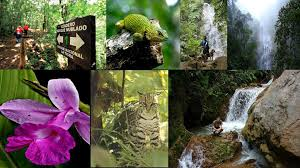
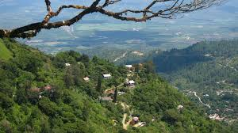

Pagina principal
Plantas en Honduras
Animales en Honduras
Biosfera del rio Platano

Parque nacional la tigra
El Parque Nacional La Tigra1 fue el primer parque nacional en Honduras. Su principal objetivo es "la conservación, preservación ecológica y el mantenimiento del potencial hidrológico y territorial de esta reserva natural".
El 1 de enero de 1980 se establece como primer parque nacional por el Decreto No. 976 de 1981.
Biodiversidad
El parque alberga gran diversidad de especies como: tucanes,monos,tapires,pumas,quetzal y además alberga una gran cantidad de insectos y escarabajos.Los helechos son otra atracción principal del parque que miden 20 metros de altura.
Geografía
La Tigra es un bosque nublado con una superficie de 328 kilómetros cuadrados (127 millas cuadradas). Tiene una altitud de entre 1800 y 2185 metros. Está ubicado a 25 km (16 millas) de Tegucigalpa, y con a mayor extensión territorial...
Beneficios
Además de su exuberante belleza natural y con un pasado histórico importante, la montaña de La Tigra, con su inmensa vegetación de bosque tropical nuboso también proporciona más del 30% de las necesidades de la ciudad capital, Tegucigalpa, y el 100 % de las comunidades aledañas ha sido protegido desde los años 1920, prueba de ello son los vertederos hidráulico de Jutiapa.
